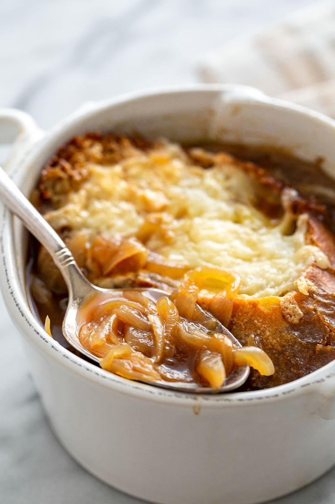

Home
French Onion Soup
Ingredients
- 6 large red or yellow onions (about 3 pounds)
- 4 tablespoons extra virgin olive oil
- 2 tablespoons butter
- 1 teaspoon sugar
- Kosher salt
- 2 cloves garlic, minced
- 8 cups beef stock, chicken stock, or a combination of the two
- 1/2 cup dry vermouth or dry white wine
- 2 bay leaves
-
1 tablespoon fresh thyme leaves, a few sprigs of fresh thyme, OR 1/2
teaspoon dried thyme
- 1/2 teaspoon freshly ground black pepper
- 2 tablespoons brandy (optional)
- 8 slices (1 inch thick) French bread or baguette
- 1 1/2 cups grated Gruyere cheese
- Sprinkling grated Parmesan cheese
Preparation Time
1 hour 20 mins
Instructions
-
Peel and thinly slice the onions from root to stem. There should be
about 10 cups of sliced onions in total.
-
In a 5 to 6 quart thick-bottomed pot, heat 3 tablespoons of olive oil on
medium heat. Add the onions and toss to coat with the olive oil.
-
Cook the onions, stirring often, until they have softened, about 15 to
20 minutes.
-
Increase the heat to medium high. Add the remaining tablespoon of olive
oil and the butter and cook, stirring often, until the onions start to
brown, about 20 to 40 minutes. The amount of time will vary depending on
your pot, stove, and onions.
-
Sprinkle with sugar (to help with the caramelization) and 1 teaspoon of
salt. Continue to cook until the onions are well browned, about 10 to 15
more minutes.
- Add the minced garlic and cook for a minute more.
-
Add the wine or vermouth to the pot and scrape up the browned bits on
the bottom and sides of the pot, deglazing the pot as you go.
-
Add the stock, bay leaves, and thyme. Bring to a simmer, cover the pot
and lower the heat to maintain a low simmer. Cook for about 30 minutes.
-
Season to taste with more salt and add freshly ground black pepper.
Discard the bay leaves. Add brandy if using.
-
While the soup is simmering, line a sheet pan with parchment paper or
foil and preheat the oven to 450°F with a rack in the upper third of the
oven.
-
Brush both sides of the French bread or baguette slices lightly with
olive oil (you'll end up using about a tablespoon and a half of olive
oil for this).
-
Put in the oven and toast until lightly browned, about 5 to 7 minutes.
Remove from oven.
-
Turn the toasts over and sprinkle with the grated Gruyere cheese and
Parmesan. Return to oven when it's close to serving time and bake until
the cheese is bubbly and lightly browned.
-
To serve, ladle soup into a bowl and transfer one cheesy toast onto the
top of each bowl of soup.
-
Alternatively, you can use individual oven-proof bowls or one large
casserole dish. Ladle the soup into the bowls or casserole dish. Cover
with the toast and sprinkle with cheese. Put into the broiler for 10
minutes at 350° F, or until the cheese bubbles and is slightly browned.
